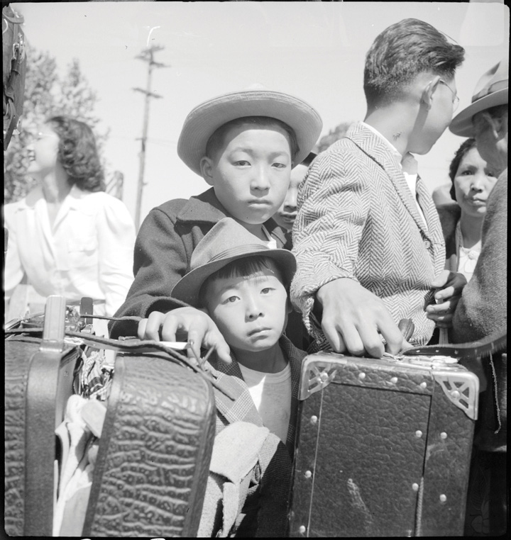
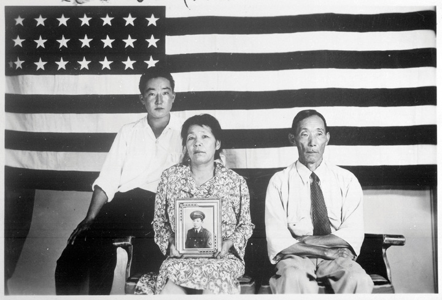
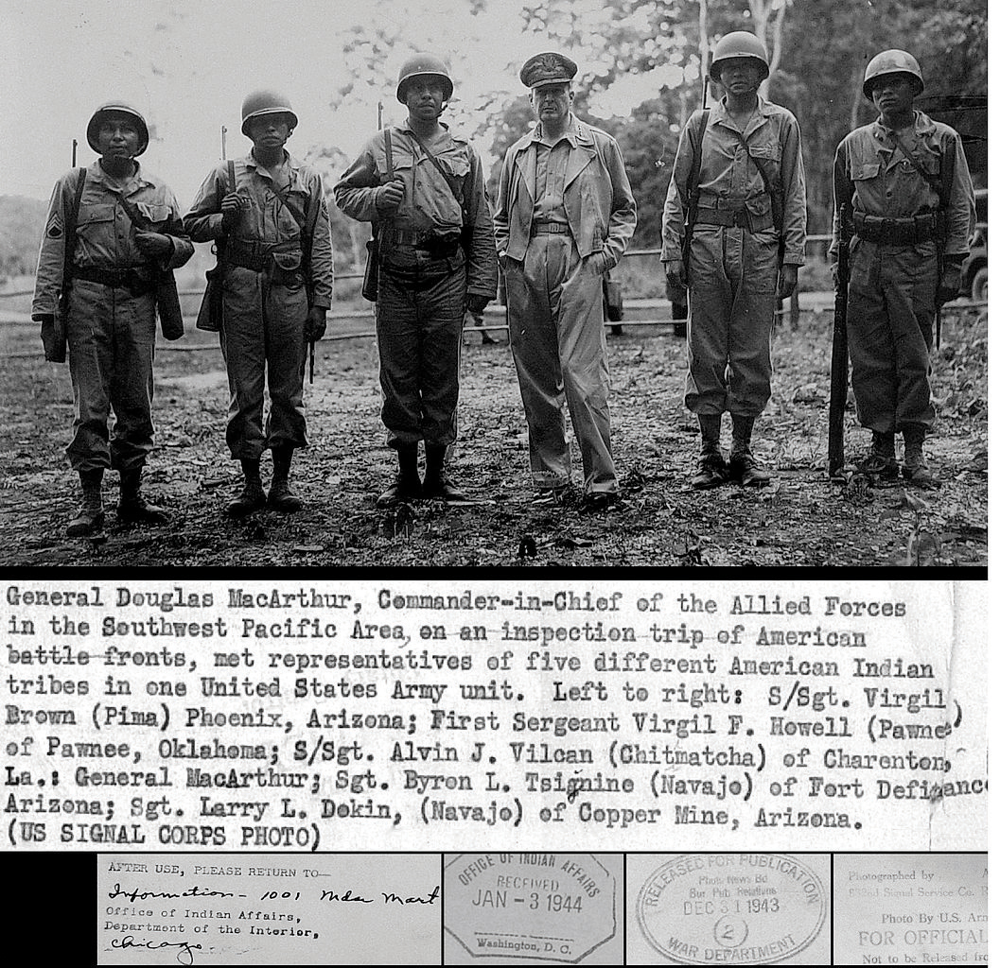
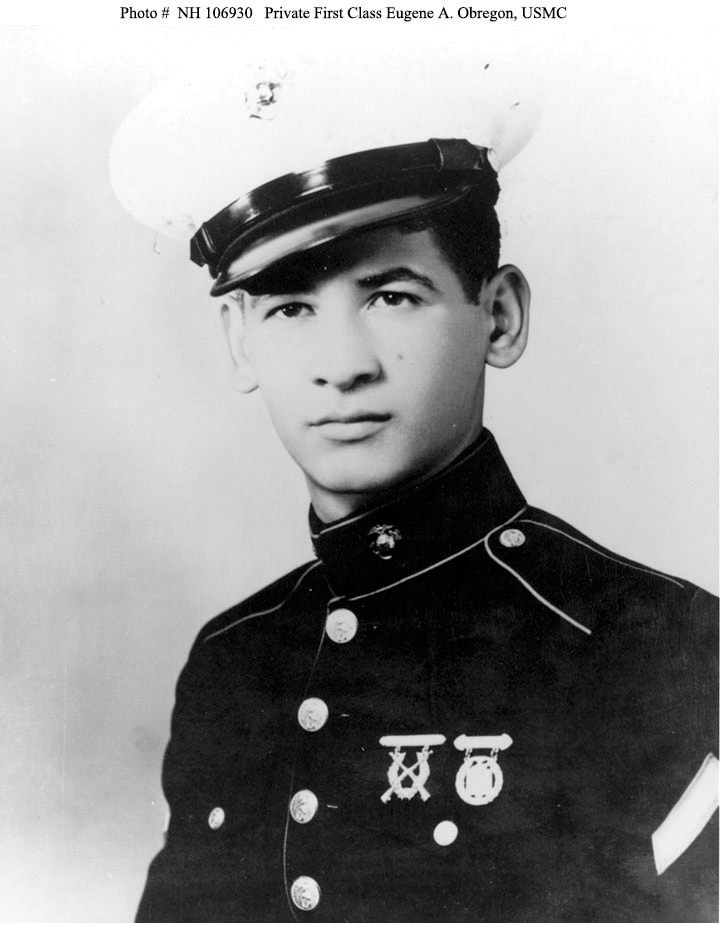
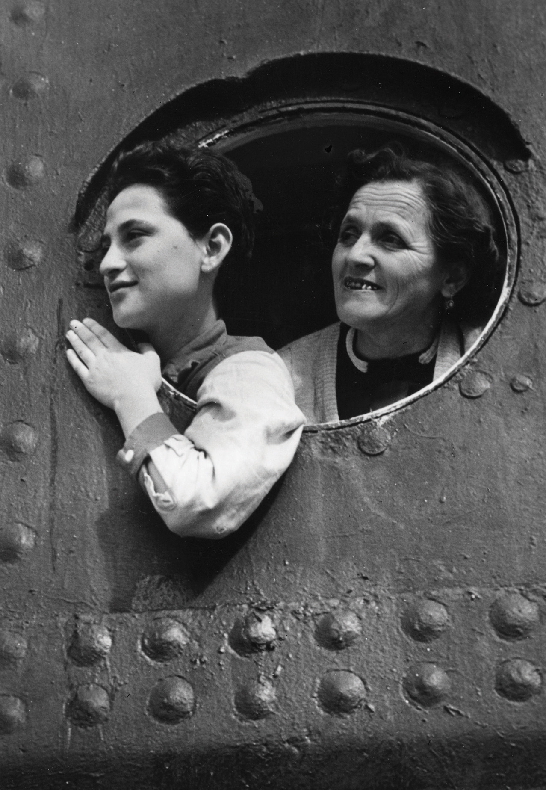

Republican congresswoman Edith Nourse RogersA Massachusetts congresswoman who served her district from 1925 to 1960, longer than any woman in history. During her time, she sponsored not only legislation benefitting women, such as bills ensuring that women serving in military positions were granted military status and benefits, but also legislation benefitting all veterans such as the GI Bill. of Massachusetts introduced a bill authorizing the creation of a Women’s Auxiliary Army Corps (WAAC) in May 1941. Nourse was motivated by her desire to obtain military benefits for the nearly 60,000 women who were already performing the same job as male soldiers in a variety of clerical and other fields. These women were hired by the military, but because they were not in the military, the women were ineligible for benefits and often paid far less than male soldiers.
Rogers’s bill passed in May 1942, by which time each branch of the armed services was creating similar opportunities for female service. For example, the navy organized the Women Accepted for Voluntary Emergency Service (WAVES)The women’s branch of the navy during World War II. Unlike the army, the navy immediately recognized women who joined the WAVES as members of the military. Some 100,000 women served within the WAVES of the navy, while another 40,000 served in the marines and coast guard. Approximately 75,000 women served in the nursing corps of the various armed services. in August 1942. One important distinction between the two organizations is that women in the WAVES were part of the navy, while the WAACs were considered civilians until 1943. At this time, the WAAC became the Women’s Army Corps (WAC)Begun as a civilian auxiliary to the all-male army, the Women’s Army Corps enlisted 140,000 American women who served in various noncombat positions ranging from clerical work to mechanical and communications fields., and like the WAVES, WAC members held the same rank and were given the same pay as men. In practice, however, few women were granted promotion past the lowest enlisted ranks. The result was the continued discrimination against women in terms of rank and pay that was typical in civilian employment.
This inequity in promotion was related to the military’s perception of female service as an “auxiliary” to the more important work of male soldiering. Most women at this time at least partially accepted the notion that women’s service was secondary to that of men. Even women who had more radical ideas about gender usually sought to convince others that female military service was consistent with more widely accepted views about women’s roles. For example, Americans viewed British women serving in their nation’s various military auxiliaries as heroines forced from their homes by the extraordinary threat of invasion. Americans generally admired the way the British women responded to their nation’s call for service and recognized that total warfare required full mobilization of all resources. As a result, advocates of female service in the United States argued that the emergency of war made it permissible for US women to temporarily serve in military roles, just as women in Britain had done.
The public reaction to women’s service was skeptical at first, as evidenced by letters to the editor of hundreds of local and national newspapers that questioned the likelihood that women would be effective as soldiers. These letters frequently contrasted the “male” characteristics of discipline, intelligence, and strength with the belief that women were naturally disposed to be overly emotional, illogical, chatty, and obsessed with trivial things like shopping. Others predicted that women’s service would lead to a breakdown of the home as well as military discipline. Over time, these objections became less frequent, especially as military officials embraced the idea of women’s service and praised the efforts of early recruits.
Despite the nation’s growing acceptance of female soldiers and sailors, Americans also reveled in political cartoons, which played on their earlier assumptions that women and military service were incompatible. Newspapers produced hundreds of images of women falling in for revile in curlers, struggling to salute an officer while holding a purse, and falling behind on a march due to high heels and a pesky slip that kept showing underneath their military-issued skirts. Popular cartoons such as Winnie the WAC featured the misadventures of an affable but stereotyped blonde who daydreamed about shopping and men while her more serious and soldierly brunette and red-haired bunkmates adjusted easily to army life. These cartoons may have seemed both humorous and good-natured to many readers, especially considering the many mean-spirited portrayals of WACs as unattractive, unpleasant, and unfeminine. Other artists simply poked fun at their society’s fears that female service would reverse gender roles. A popular cartoon sarcastically featured the new model of American masculinity at home in an apron, knitting while pining away for his wife as he waited for his protector and provider to send him his monthly allowance as a military “wife.”
Surveys of public opinion demonstrate that these cartoons were popular because most Americans reconsidered their initial concerns about limited wartime service leading to the breakdown of traditional gender roles and at least tentatively approved of women serving as WAVES, WAACS, military nurses, and other female service branches. Addressing these initial concerns was the leading task of many advocates of female service, such as Ohio congresswoman Frances Bolton. Bolton and other women worked to minimize the potential threat female service might represent to some men. Women were not joining the military to compete with male soldiers, Bolton explained, but rather assist them with their job of protecting the country during wartime. If the presence of women in nursing and secretarial positions in the civilian sector was considered acceptable work, women asked, why should they be barred from performing these same tasks in the military? The military would still be “a fighting world for you,” Congresswoman Bolton assured her male listeners, “and an assisting one for us.”
Figure 8.9

Many images from this time period poked fun at the notion of women in the military. Winnie the WAC featured an affable but stereotypical “blonde” whose comical misadventures also poked fun at the army’s inclusion of women.
Bolton and other proponents of women’s service stressed that female enlistment provided a means by which thousands of male soldiers could be “freed up” to serve in combat operation, just as female factory workers had permitted more men to join the military. Declining enlistments motivated even the most conservative male military leaders to consider this point of view. By 1942, each branch of the military launched a propaganda campaign aimed at convincing Americans that women’s service was not a radical departure from other modes of female employment. For example, one poster juxtaposed the image of a civilian woman taking the place of a man on an assembly line with a military woman taking place of a male soldier at a typewriter. In both instances, the man in the poster seemed taller and stronger as well as more confident and happy as he abandoned “women’s work” and assumed his proper masculine role as a soldier on the front lines. Such wartime propaganda helped to win support for women’s service. However, these images likely had a debilitating effect on the hundreds of thousands of male soldiers employed in clerical and service positions.
Eleanor Roosevelt took a slightly more radical view of women’s military service. Roosevelt was an early proponent of the WAAC and worked to secure her husband’s support for a number of suggestions she sent to the War Department throughout 1941. After years of work to convince military leaders of the usefulness of female enlistment and its consistency within traditional notions of gender, female service advocates launched offensive campaigns of their own against those who opposed their ideas. Armed with the full support of military leaders, women’s rights advocates were able to place opponents of female service on the defensive. Wrapping “GI Jane” in the flag, women’s service advocates challenged the patriotism of those who still opposed female service in the later years of the war. If every woman who joined meant that one more rifleman could serve on the front, they asked, how could any loyal American still oppose female enlistment?
Advocates of women’s military service also presented wartime service as a way patriotic women could aid the war effort, utilizing emotional images such as sisters and wives of deceased veterans honoring fallen brothers and husbands through their service. By placing opponents of female service on the side of America’s enemies, these women engineered a reversal of fortune where opponents of female service were now placed on the defensive. For example, one congressman who opposed women’s service complained that he and others would not dare vote against measures to expand women’s service for fear of being accused of hindering the war effort.
Women’s rights advocates were also able to turn paternalistic arguments about the need to “protect” women against those who opposed equality in the ranks. If the men who opposed granting full military status to women were acting out of concern for these women, they asked, why did those men insist that women work the same clerical jobs as male soldiers but be denied the protection of veterans’ benefits? Over time, most Americans recognized the valuable service women provided and supported the decision of each branch and the War Department to grant women full military status and benefits such as the GI Bill. However, many hoped that after the war was over, the military would return to the status quo with women working as civilians for the military rather than soldiers and sailors within it. They feared that changing the military’s institutional gender structure would forever alter society’s ideas of masculinity and traditional gender roles. Men were expected to fight as part of their role as defenders of the nation and the home according to this traditional model. Under this ideal, women were expected to support the men and play the role of the girl back home for whom each man was fighting. Female soldiers reversed the traditional image of women as the recipient of protection and likewise threatened to challenge the notion of men as protectors. For this reason, many hoped that female membership in the armed services would be limited to the war years.
The notion that women’s service would be a temporary expedient originated from the initial arguments of women such as Edith Nourse Rogers. She and others who led the fight for female service were radical in their acceptance of women as members of the military who should receive equal pay and benefits. However, many of these women also accepted notions of female service as temporary, separate, and subordinate. Most advocates utilized conventional notions of gender as they tried to win over opponents, assuring them that women would be only temporary workers in auxiliary positions in a chain of command that ultimately reported to male leaders. These women generally avoided any argument that likened women’s service to women’s rights, and few would have considered themselves as feminists, at first. However, the service and sacrifice of 150,000 WACs, 100,000 WAVES, nearly 40,000 women within the marines and coast guard, and 75,000 military nurses convinced women’s advocates and military authorities to agree that women’s service was instrumental to the war effort and should continue. In 1948, Congress passed the Women’s Armed Service’s Integration Act, authorizing female service in all branches of the military during both peacetime and war. However, negative perceptions of female service remained long after women were permanently integrated into the military.
Figure 8.10
Japanese American families awaiting baggage inspection upon arrival at an assembly center located near to the present-day campus of California State University–Stanislaus in Turlock, California.
The attack on Pearl Harbor and subsequent US defeats spread fear along the West Coast. For Japanese Americans, the news of Pearl Harbor produced a different kind of fear. In addition to sharing the concerns of their countrymen regarding the impending war and those who had lost their lives, they also feared the discrimination they had endured would now take the form of violent retribution for the attack. The FBI immediately conducted mass arrests of Japanese newspaper editors, civil rights and community leaders, even Buddhist priests. Within weeks, the government expanded its dragnet from leaders of Japanese organizations to all persons of Japanese ancestry convinced that the Japanese military were planning additional attacks with the assistance of informers within the United States. Even worse, many Americans and government officials believed that if Japan launched a full attack on the West Coast, most American residents of Japanese ancestry would welcome the invaders and take up arms against their former countrymen.
The FBI also arrested over 10,000 immigrants from Germany and Italy for similar reasons, but these investigations were based on suspicion of membership within pro-Nazi and fascist organizations, unlike the Japanese, who were arrested for association within a Japanese community organization or Buddhist church. Given the millions of Americans of Italian and German descent scattered throughout the nation, there was hardly any consideration of investigating or detaining these groups. In contrast, Japanese Americans were a much smaller minority who tended to live within 100 miles of the West Coast. Italians and Germans continued to face discrimination in America, but decades of migration combined with the common European heritage of other Americans had eroded most of the hostility these groups faced. In contrast, Japanese Americans in 1940 experienced the same racial prejudice that had led to laws restricting their entrance into the nation, including stereotypes that suggested that the Japanese were deceptive by nature. As a result, the military forced 120,000 Japanese Americans to live in detainment camps. Most of the detainees would remain in these camps for the duration of the war.
President Roosevelt issued Executive Order 9066Issued by President Roosevelt in 1942, Executive Order 9066 granted the military the authority to remove persons of Japanese descent from the West Coast. The order also led to the arrest of 5,000 Italian and German immigrants. However, the order was primarily aimed at Japanese Americans and led to the legal internment of an estimated 120,000 people in camps from Arkansas to the West Coast. on February 19, 1942, authorizing the military to designate sections of the country from which “any and all persons” might be removed. The law did not specify what everyone already understood—that this was a measure granting wide authority to officials in the War Department to force Japanese Americans to leave the West Coast. A number of Roosevelt’s advisers believed that the plan was a clear violation of the civil rights of US citizens of Japanese descent and unjustified because despite the mass arrests, not one person had been proven guilty of treasonous crimes. Roosevelt instead chose to follow the advice of his military leaders and accommodate the demands of numerous West Coast politicians who aroused the angry passions of anti-Japanese prejudice in demanding the immediate removal of all persons of Japanese ancestry no matter their age, gender, or length of time as US citizens. Rumors that dozens of Japanese pilots who participated in the raid on Pearl Harbor had been US citizens were reported as fact. Americans were also surrounded by false reports that Japanese residents of Hawaii had worked behind the scenes to prevent early detection of the raid. Surrounded by fear and misinformation, few Americans questioned the military necessity of detainment or challenged the assumption that anyone of Japanese descent should be considered a suspect.
The government’s removal and detainment of Japanese Americans followed a three-step process. At first, the military simply ordered Japanese Americans living on the West Coast to migrate east on their own and at their own expense. Voluntary relocation failed because few Japanese Americans agreed to leave and because residents and political leaders of various Western states protested that this would simply make their communities “vulnerable” to Japanese treachery. The government then served notice that all Japanese Americans must register and prepare to be sent to a variety of “assembly centers” operated by the War Relocation Authority (WRA). Few had more than a week to prepare for this second phase of relocation, and as a result, many were forced to sell homes and businesses for a fraction of their value. After arrival at one of eighteen assembly centers, usually fairgrounds surrounded by barbed wire where internees slept in horse stalls, people were forced to wear luggage tags indicating the internment camp to which they would be sent. Transfer to one of ten camps marked the final step of the process.
Figure 8.11
The Hirano family was among the 18,000 people sent to the Poston, Arizona, internment camp. They are pictured here with a photo of a family member who served in the military. The Poston camp was located in the Sonoran Desert and was so isolated that guard towers were not constructed, although the camp was surrounded by fences.
Life in the internment camps was difficult, especially for the first arrivals in May 1942 who found that their new homes were not yet ready for habitation. Internees were tasked with building their own camps, even building watchtowers and repairing the barbed wire that surrounded them. Most internees lived in camps in the deserts of California, Utah, and Arizona where temperatures varied from well over 100 degrees to below freezing in the same month. Others lived in swamp-like conditions near the Mississippi river or other inhabited lands. They also faced military discipline including strictly regimented schedules and inspections, a near total lack of privacy, and the arbitrary justice of armed soldiers who guarded the camps. Despite the conditions and injustice that led to their internment, Japanese Americans joined together to improve the quality of life within the camps. Of particular importance were schools, cultural activities, and recreation. Traditional Japanese sports alternated with basketball and baseball, a game played by generations of Japanese immigrants in California. Internees at the Gila River camp in Southern Arizona constructed a modern ballpark and formed several different leagues under the direction of California Kenichi Zenimura, a baseball legend who had once played with Babe Ruth; Zenimura had been detained with his family in the camp. The camp’s top teams competed against and defeated army teams, as well as local high schools and colleges.
Most Americans defended this practice as vital to the defense of the nation and denied that the measure was the result of racism. African American leaders were among the strongest critics of relocation as a denial of civil rights. Native Americans shared a unique perspective as the victims of centuries of forced relocation and likewise challenged the alleged racial neutrality claimed by defenders of relocation. Others, such as General John DeWitt who administered the internment program, emphatically believed that race was the basis of the entire program. Dewitt’s original memo recommending removal referred to the Japanese as “an enemy race.” When questioned about why no person of Japanese ancestry had been found guilty of disloyal acts in the months that followed Pearl Harbor, he insisted that this fact merely confirmed the treachery of the Japanese, who, he contended, were simply hoping America would lower its guard. “I don’t want any of them (persons of Japanese ancestry) here,” he exclaimed to Congress. “They are a dangerous element.… There is no way to determine their loyalty.… It makes no difference whether he is an American citizen, he is still a Japanese…but we must worry about the Japanese all the time until he is wiped off the map.”
Thousands of Japanese Americans protested their internment from within their camp walls. The strategies they utilized varied from those who sought to demonstrate their loyalty by volunteering for military service to those who renounced their citizenship. Others followed the precedent of Native Americans by protesting forced relocation in dozens of court cases. In Korematsu v. United StatesA US Supreme Court Case in late 1944 in which the Court declared that the internment of Japanese Americans was justified to protect national security. Three of the nine justices dissented, viewing internment as a form of racial discrimination and a violation of the Fourteenth Amendment., the Supreme Court upheld the legality of Japanese internment under the Fourteenth Amendment on December 18, 1944. The court declared that the WRA had not singled out the Japanese American defendant Fred KorematsuThe son of Japanese immigrants, Korematsu was born in Oakland at the end of World War II. He refused the government’s order to report to a relocation center and was arrested and jailed. With the assistance of the American Civil Liberties Union, Korematsu appealed his arrest all the way to the Supreme Court, which determined in 1944 that the internment order was justified by the existence of Japanese American spies. Provided with new information detailing the absence of any Japanese American spies, however, a federal court reversed Korematsu’s conviction in 1983. because of his race and that the exclusion of Japanese citizens from the West Coast was legal. In a second case decided on the same day, the court limited the powers of the War Relocation Authority to detain citizens whose loyalty to the United States had been proven. The wording of this second decision was intentionally vague, allowing the government to selectively release some internees long after Japan’s ability to attack the United States had been eliminated.
Like other minority groups before them, Japanese Americans used logic and moral suasion to demonstrate that the discrimination they faced hurt the war effort. Among the many letters and petitions calling for their release were detailed estimates of the total cost of relocation in contrast with the potential contribution Japanese Americans could make to the war effort. Others pointed out the propaganda value the WRA provided the enemy in convincing Asian peoples to support the war effort against the Unites States. Japanese American leaders also sought to make Americans question their leaders’ assurances that detainment was needed to protect their safety. If Japanese were such a threat, they reasoned, why were only a few thousand of more than 100,000 persons of Japanese descent in Hawaii detained? Hawaii was the most likely and most vulnerable target, yet the military continued to employ thousands of Japanese who were not US citizens on the very military bases that were so vital to the nation’s defense. Had military officials responded to these letters, they would have tacitly admitted that these bases could not operate without the employment of persons of Japanese descent, who represented a third of the islands’ population. That persons of Japanese descent continued to work on military bases throughout the Pacific while only a handful of people were ever convicted of spying for the Japanese (most of whom were Caucasian) became a powerful argument to force Americans to reconsider internment.
More than 30,000 Japanese Americans joined the war effort, the majority of whom had been forced from their homes following the attack on Pearl Harbor. Several hundred internees refused induction into the military and were soon transferred from detainment camps to prison. Those who chose to serve the nation that had detained their families joined regiments such as the 100th Battalion, which had been created earlier in the war. Prior to the inclusion of the internees, the 100th Battalion consisted primarily of second-generation Japanese who lived in Hawaii. More than 1,000 young men who were detained on the West Coast volunteered for service in late 1943 when given the opportunity and joined the 442nd Infantry Regimental Combat TeamAn all-Japanese American unit composed of men who had joined the military prior to the attack on Pearl Harbor that was augmented by recruits who had been living in internment camps throughout the West Coast and volunteers from Hawaii and other areas. The 442nd served with distinction in military campaigns throughout Europe, including the liberation of the Dachau concentration camp.. Together, the 14,000 men who served within this unit became some of the most highly decorated soldiers in US military history, earning more than 9,000 Purple Hearts. More than 700 Japanese American soldiers were declared missing or killed in action. The medals earned by these men were delivered to surviving family members, many of whom were still detained as “enemy aliens.” Military service did not exempt one’s family from internment, and so hundreds of soldiers of various backgrounds whose spouses were of Japanese origin also fought to defend a nation that detained their families.
For the 80,000 Americans of Chinese descent and the more than 100,000 who migrated from Korea, Vietnam, the Philippines, and other nations in Southeastern Asia, the attack on Pearl Harbor meant that their new home was now allied with their ancestral home against the Japanese. California residents of Filipino origin were especially motivated to defend both their homelands and formed two regiments of infantry. Thousands of other Filipinos served in various “white” regiments. Women such as Hazel Ying Lee, who had been trained as a pilot in China, flew civilian missions for the army before a mechanical failure caused a crash that ended her life. What might have led to greater acceptance of these Asian Americans and immigrants quickly turned into a nightmare as few white Americans made any effort to distinguish between people of various Asian ancestries. Tens of thousands of Asian Americans from China, Korea, and the Philippines joined the military, yet they and their families faced anti-Japanese taunts from a racially charged and misinformed public. Civilians wore Chinese flags or placed signs in their shops identifying their Korean ancestry to little avail. Even participation in anti-Japanese race-baiting did little to convince some whites that an individual was not simply masking his or her true ancestry and loyalty. Tragically, hundreds of American citizen-soldiers of various Asian ancestries learned that their families had been the targets of racially motivated crimes in letters they received while enlisted in the US military.
More than 25,000 residents of Native American reservations and another 20,000 Native Americans enlisted in the US armed services, a number representing nearly a third of those native men who were eligible to enlist. The Six Nations (also known as the Iroquois Confederacy) issued their own declaration of war against the Germans and Japanese. This action both demonstrated support for the American cause and emphasized the principle of Native American sovereignty and the importance of tribal governments. Just as the Choctaw had sent secret messages during World War I, Native American soldiers in World War II demonstrated the value of their cultural traditions by using their languages to send messages to one another. Navajo members of the Marine Corps are the most famous example because their complex language was understood by only a handful of non-Navajo people in the world. This complexity allowed the Navajo Marines to speak freely to one another over radio channels with little fear of the enemy deciphering their messages.
These Code TalkersA generic term referring to Native Americans who utilized their indigenous languages to communicate top-secret messages for the US military during World War II. The term usually refers to Navajo members of the marines operating in the Pacific whose ability to speak directly with each other without the time-consuming use of encryption machines gave US commanders the advantage of nearly instant communication without fear of the enemy intercepting their messages., as they became known, adapted many of their words to represent terms used during modern warfare as they sent secret messages on behalf of Allied commanders. For example, “iron fish” represented “submarine,” while individual locations could be spelled out with their own unique version of a phonetic alphabet. The Navajo language does not consist of a formal alphabet, so the code talkers would use Navajo words whose English meaning corresponded with the first letter they were trying to communicate. For example, if a code talker wanted to communicate the word “Japan,” he might say “jacket-apple-planet-ant-night.” German and Japanese intelligence officers knew that the military was once again using indigenous American languages as code, but failed in their efforts to recruit a single member of any of the tribes whose languages were used as code.
Figure 8.12
General Douglas MacArthur is pictured with members of a unit composed entirely of Native American soldiers. The five troops in this photo are each from different tribes and locations throughout Arizona and Oklahoma. In this way, the unit was both segregated and a melting pot for people of diverse backgrounds.
The 1930s were host to a number of programs aimed at restoring Native American culture, language, history, and community life within the reservations. The code talkers and the large number of well-educated young men and women who entered the military demonstrated the value of these programs. Yet these individuals and the tens of thousands of others who left the reservations to take wartime jobs in the nation’s cities were a bittersweet pill for those seeking to restore native life and culture. The demands of the war reduced funding for further cultural and educational programs, while many of the would-be reservation leaders of the next generation enlisted or found wartime jobs in large cities. Many native veterans decided to take advantage of their military benefits to attend college, and some of these young folks decided to take better-paying jobs in cities throughout the country. The success of these individuals seemed to many Americans as evidence that other natives must also be “liberated” from the reservations. In the next decade, many Americans supported plans designed to close reservations in hopes of completing the process of assimilation. Most of these advocates had positive intentions, but many demonstrated a lack of respect for the agency of native people by their failure to consider the opinions of natives regarding plans for the termination of reservations.
Military enlistment and the migration of millions from farms to cities created an emergency labor shortage for US farmers at the exact moment the nation needed to increase food production to feed its army and allies. After a decade of discouraging Mexican immigration during the Depression, the federal government now requested assistance from the Mexican government to help the US farmers recruit agricultural laborers. The Mexican government was skeptical of US intentions and worked to gain assurances that Mexican nationals working in US fields would be treated fairly and not drafted or otherwise coerced into military service. The government responded in 1942 by creating the Bracero ProgramA federal initiative aimed at encouraging Mexican nationals to come to the United States as agricultural laborers on temporary contracts between 1942 and 1964., which recruited Mexican laborers in both agriculture and railroad construction to come to the United States.
Under the program, the federal government provided transportation for the braceros (Spanish term for manual laborers) who agreed to have 10 percent of their pay withheld and placed into an account that was to be given to them when they returned to Mexico. Government officials hoped that these deductions would provide an incentive for Mexican laborers to voluntarily leave the country after their services were no longer desired. However, many of the workers either stayed in the United States or never received their money upon return to Mexico. Furthermore, the majority of farmers in border states such as Texas rejected the terms of the Bracero Program because it mandated a minimum wage many farmers refused to pay. As a result, Texas farmers simply encouraged illegal and undocumented immigration because they felt the Bracero program was too restrictive and its terms too expensive for farmers to comply with. Historians estimate that several hundred thousand illegal immigrants entered Texas each year, in addition to an estimated 4.5 million Braceros who legally entered the United States between the war and the termination of the program in 1964.
More than 300,000 US officers and enlistees of Mexican descent served in World War II. The heroism of many of these men is evidenced by the awarding of more Congressional Medals of Honor to Mexican Americans than any other racial minority. Given the refusal of military officials to bestow this award on men such as Guy GabaldònA marine of Latino descent, Gabaldòn used his knowledge of Japanese phrases to convince entrenched Japanese soldiers to surrender. During the Battle of Saipan in 1944, he convinced hundreds of Japanese troops that their position was untenable and that they would be spared and taken back to Japan after the war if they surrendered., this achievement is all the more remarkable. Gabaldòn grew up in a multiethnic neighborhood in Los Angeles and was partially raised by a Japanese family who were interned during the war. Gabaldòn joined the marines and single-handedly captured hundreds of Japanese prisoners of war during the battle for Saipan in 1944. Gabaldòn used his military training to approach enemy caves and pillboxes, often sniping the guards and then calling on those inside to surrender. Few Japanese ever surrendered to US troops, but Gabaldòn’s ability to speak their language helped persuade many that they were trapped and that they would not be harmed if they laid down their weapons. The navy later awarded Gabaldòn the Silver Star and the Navy Cross after a movie based on his heroics debuted in 1960. The film’s success led to public demand that Gabaldòn be given the proper military recognition denied to him for sixteen years, but it also featured a white actor in the lead role.
Figure 8.13
One of many Hispanic Americans who were awarded the Medal of Honor posthumously, United States Marine Eugene Obregon used his body to shield his comrades.
Other Mexican Americans who grew up in Los Angeles faced discrimination of a different sort. Following a series of altercations between white servicemen and Mexican American youths early June 1943, soldiers and sailors openly roamed the streets of Los Angeles for nearly two weeks attacking any young man who appeared to be of Latino heritage. Most California newspapers inflamed the issue through sensational reporting that portrayed Mexican American youths as gang members who were attacking servicemen. Most reports neglected to mention that as many as 5,000 sailors and soldiers had entered the city with clubs and other weapons to “avenge” those who had been hurt in previous altercations. Most historians refer to the event as the Zoot Suit Riot due to the popular style of baggy and “flashy” clothing worn by some Mexican American youths. Others believe that because the servicemen were the leading antagonists and the Zoot Suiters were often the targets of their violence, the entire affair should be known by a different name.
Due to negative stereotypes and the criminal record of a few Zoot Suiters, the Los Angeles Police Department (LAPD) arrested hundreds of Mexican American youths throughout the week based only on their choice of clothing. In contrast, thousands of soldiers and sailors who were brandishing weapons were simply ordered back to their barracks. The riots were finally halted when area commanders declared the city off limits to military personnel. The city of Los Angeles responded by passing an ordinance that banned residents from wearing zoot suit. Despite the injunction, Mexican American youths were ordered to stand trial wearing the same baggy clothing in which they had been arrested. The mayor defended the police in a statement declaring that all young men on the streets wearing the now infamous zoot suit would be arrested. Eleanor Roosevelt cautioned Americans that the problem of Los Angeles was much deeper than clothing and deplored the conditions surrounding the trials of the convicted youths. Although her editorial was praised by many as an eloquent and thoughtful analysis, others deplored her use of the term race riot and felt her criticism of the LAPD was evidence that the first lady was a Communist sympathizer.
Many of the soldiers who attacked Mexican American youths also terrorized young black men as they roamed through Los Angeles and San Diego. Each of the various sociological explanations for the violence in California—racial profiling by police, job competition, immigration of racial minorities, segregated neighborhoods, and housing shortages—were problems faced by African Americans in most of the nation’s leading cities. Fifty-thousand black residents moved to Detroit within a few short years, but the city’s pattern of residential segregation had not changed. Black newcomers typically sought homes in neighborhoods where they felt welcome, and even those willing to integrate white neighborhoods seldom found housing outside established black neighborhoods. These neighborhoods were quickly overwhelmed as millions of black families moved north and west to take advantage of wartime jobs.
Those black families who sought homes outside the “black” areas of town were frequently attacked. In 1942, a new housing project in Detroit named after Sojourner Truth sparked violence when area white residents vowed to prevent black families from moving into “their” neighborhood. The following year, the city exploded in racial violence that led to the deaths of nine whites and twenty-five blacks after a series of altercations in the city park turned several inner-city neighborhoods into battlegrounds. Six blacks were killed in similar racially motivated violence in Harlem. Meanwhile, a white mob in Beaumont, Texas, murdered two residents as they rampaged through the black section of town in an effort to enforce the informal border between a white and black neighborhood.
America was quickly becoming an arsenal, but for millions of African Americans who were still out of work in 1939 and 1940, this arsenal was anything but democratic. For example, in 1940, only a few hundred black workers were employed in the aircraft industry, which employed 100,000 whites. In response to the thousands of companies engaged in defense production that still refused to hire African Americans or relegated them to the lowest-paying jobs, black labor leader A. Philip Randolph proposed a different kind of strike. “Black people will not get justice until the administration leaders in Washington see masses of Negroes—ten, twenty, fifty thousand—on the White House lawn.” Randolph predicted that a massive protest march at the nation’s capital would expose the hypocrisy of a government claiming to support free-market principles and democracy. The march would reveal that the United States did not follow its own principles of equality concerning employment. The march threatened Roosevelt’s desired international image for America as the defender of freedom and democracy by exposing segregation and discrimination at home. In exchange for Randolph’s promise to cancel the march, Roosevelt issued Executive Order 8802Issued by President Franklin Delano Roosevelt in response to a campaign waged by black labor leaders such as A. Philip Randolph, Executive Order 8802 banned racial discrimination among employers and contractors who did business with the federal government. outlawing racial discrimination by any employer who received defense contracts. The order created the Fair Employment Practices Committee (FEPC) to ensure compliance. Although this agency was severely underfunded and discrimination in private industry continued, Roosevelt’s was the first significant presidential order prohibiting racial discrimination since Reconstruction.
Randolph’s fight for equal opportunity in employment was a leading example of the Double V campaign—a call by black leaders to make World War II a battle for freedom at home and abroad. Black soldiers were fighting for victory against Fascism abroad, the African American newspaper the Pittsburgh Courier explained. The national black press echoed the Courier’s call to arms and called on their readers to ensure victory against tyranny in America. The NAACP expanded from 30,000 members to nearly half a million members. Black suffrage had been curtailed since Reconstruction due to violence as well as laws and practices that effectively prohibited black voting, yet voter drives helped to increase registration in the South from 2 percent to 12 percent of eligible black voters.
Despite these efforts, the voices of most Southern blacks and even some of these registrants were still effectively silenced at the polls. One of the most subtle but pernicious ways blacks were disenfranchised was that some Southern political parties restricted membership to whites. In Southern states where most residents were members of one political party (usually the Democratic Party at this time), the winner of that party’s primary election almost always prevailed in the general election. With the assistance of the NAACP, civil rights attorneys convinced the Supreme Court in 1944 that denying blacks the vote in primary elections violated the Fourteenth and Fifteenth Amendments in the landmark case Smith v. AllwrightLonnie Smith of Houston sued local election official S. S. Allwright in 1940 for the latter’s refusal to permit Smith to vote in the Democratic primary. The Democratic Party of Texas claimed that its explicit restriction against black voting did not violate the Fifteenth Amendment because the party was a private organization. The Supreme Court disagreed because primary elections were regulated by the state and therefore must follow Constitutional provisions banning racial discrimination. As a result, the Supreme Court’s decision guaranteed the right to vote in primary elections regardless of race..
This new militancy also led to the formation of the Congress of Racial Equality (CORE)An interracial civil rights organization founded in 1942 by James Farmer and others who sought to utilize the same nonviolent protest methods employed by Gandhi in India. CORE sponsored major protests beginning with the 1947 Freedom Ride that tested a recent court decision banning segregation on buses traveling from one state to another., the first national, interracial civil rights organization since the formation of the NAACP. Unlike the NAACP, however, CORE was largely composed of young adults who attended Northern and Western colleges. These young people believed that direct action rather than lawsuits was the key to challenging racial segregation. CORE members launched sit-ins in Northern cities such as Chicago, border cities such as Cincinnati, and smaller towns such as Wichita and Lawrence, Kansas. In each instance, black students went to restaurants known for refusing service to African Americans and sat down until they were arrested, beaten, or served.
Proprietors in most of these cities could seldom have the students arrested because Illinois, Ohio, and Kansas, like many other Northern states, had passed civil rights laws in the 1870s and 1880s that outlawed racial discrimination in places of public accommodation. At the same time, law enforcement generally refused to do anything to enforce the civil rights laws. As a result, the students occupied booths for days until each owner finally decided it was in their best financial interest to change their policy and follow the existing but seldom enforced state civil rights laws. Sit-ins also occurred in former slaves states such as Missouri and Kentucky during World War II but resulted in only limited concessions until the 1950s.
African Americans attempted boycotts and others forms of consumer protest to force white-controlled businesses to end segregation and hire black workers throughout the first half of the twentieth century with little success. However, with unemployment nearing its all-time low as wages surpassed record highs, black communities enjoyed a new level of consumer prosperity during World War II. This prosperity, combined with the wartime assertiveness of the Double-V campaign, the creation of local civil rights groups affiliated with CORE, and the exponential growth of the NAACP, led to renewed campaigns to force companies that did business in black communities to end discrimination against black customers and prospective black employees. From Harlem to Houston, black consumers refused to shop at stores located within black communities until they agreed to hire black workers.
Public transportation and utility companies that refused to hire African Americans were especially targeted by civil rights groups due to their regulation by local government and their dependence on black customers. For example, St. Louis residents protested against the refusal of Southwestern Bell to hire African Americans in 1943. The protest began with petitions and letters and later expanded to protest stickers affixed to customer’s monthly payments. These stickers highlighted the irony of a nation fighting for democracy abroad yet denying its own citizen jobs at home, protesting the company’s “undemocratic, un-American and pro-Hitler employment policy.”
Figure 8.14

This poster by a Chicago National Association for the Advancement of Colored People (NAACP) branch demonstrates the way African Americans sought to connect the nation’s war against fascism abroad with their ongoing fight against discrimination at home.
The protest that followed illustrated the creativity of many civil rights protests. Hundreds of black customers marched to the Southwestern Bell’s St. Louis headquarters and declared that they would start paying their phone bills in pennies until management started employing black workers. Local college students helped coordinate the protest, which required thousands of pounds of pennies and special redemption centers where bill payers could exchange their cash for more pennies. Before long, businesses and banks throughout the city were running out of pennies and protesters appealed to family and friends in neighboring cities for assistance. The protest soon crippled Bell’s billing center, and the company relented and began hiring African Americans.
Figure 8.15

African American fighter pilots attending a briefing in Italy. These men were known collectively as the “Tuskegee Airmen” due to the location of the training school for black pilots at Tuskegee University in Alabama.
While each of these sit-ins and “pay-ins” were small and local victories, the deeper significance of what was at stake is best expressed by a returning World War II veteran who experienced Jim Crow while on his way home from the war. Traveling through Texas, Lieutenant Lacey Wilson stopped for a meal and was ordered to go to the back door of the restaurant. As he walked back to the train, he noticed a number of captured German soldiers en route to a prison farm who were in the restaurant with their military police escorts. Wilson was shocked to see that these German troops were sitting at one of the same tables where he had just been refused service. “It sickened me so I could not eat a bite after ordering,” Wilson recalled. “I was a citizen soldier in the uniform of my country and I had to go through an alley to the back door while some of Hitler’s storm troopers lapped up the hospitality of my country.” A similar incident occurred when German POWs were seated in front of black soldiers at a concert by Lena Horne until the singer protested and military authorities corrected the situation.
In 1944, three hundred black seamen were killed while loading ammunition in San Francisco due to the failure of a white officer appointed over these men to follow basic safety regulations. Incidents such as these made black men and women question for whose freedom they were fighting. Thousands of black men returning from the war experienced severe discrimination while still in uniform, and at least a dozen veterans were lynched by whites who felt black military service threatened white supremacy.
Perhaps no black leader expressed both hope and disillusionment better than the aging W. E. B. Du Bois who had called on members of his race to “close ranks” and support America’s war effort in 1917. A generation later, Du Bois challenged the notion that defeating Germany would promote freedom for people of African descent throughout the world. “If this is a war for freedom,” Du Bois exclaimed after defining what freedom meant to people of color in America and Africa, “my gun is on my shoulder.” Those who best knew the seventy-four-year-old Du Bois understood that his offer to join a military that fought for an end to racism and colonialism was as genuine as his attempt to become an officer in World War I at age fifty. Du Bois also embraced Socialism by this time and increasingly viewed the war as America assisting Capitalist and imperialistic nations like Britain and France in its fight against the imperialistic powers of Germany and Japan.
The US military continued its policy of segregated units throughout both world wars. Similar to the first war, black leaders demanded and eventually received the commitment of military leaders to commission black officers to lead black units. Black women joined segregated units of women’s branches, and like black men, were often relegated to service positions regardless of previous training or skill. Only a campaign led by Mabel K. StaupersPresident of the National Association of Colored Graduate Nurses, the leading professional organization for black nurses during the era of segregation, Staupers led the successful fight to open the nursing corps of the armed services to black women. convinced the military to accept black women as nurses, a decision also influenced by white officials who feared white nurses among black soldiers could lead to interracial dating. However, the two most famous black military units were the 99th Pursuit Squadron, commonly known as the Tuskegee AirmenAfrican American combat pilots belonging to the 332nd Fighter Group and the 447th Medium Bombardment Group trained near Tuskegee University in Alabama. In an era when many white Americans assumed that few African Americans possessed the skill, courage, leadership, and intelligence required to be officers and fighter pilots, the Tuskegee Airmen battled both racism and Fascism by compiling an exemplary record in combat operations in Europe during World War II., and the 761st Tank Battalion.
Black leaders pushed the army to make good on the “equal” portion of its separate-but-equal philosophy by training black men for the most respected combat positions as tank drivers and fighter pilots. The military set up flight schools at several historically black institutions, such as Howard University and West Virginia State College, with graduates moving on to train at Tuskegee before earning their wings and fighting German pilots. These men flew more than 1,500 missions escorting bombers. The Tuskegee Airmen shot down or destroyed nearly three hundred enemy aircraft and lost more than one hundred of their own men in combat.
An article in the Chicago Defender toward the end of the war made the claim that none of the bombers these men escorted was ever shot down. This seemingly impossible feat has been repeated as fact since it was printed in 1945. Historians have been reticent to challenge this claim because the story of the Tuskegee Airmen has so convincingly demonstrated the bankruptcy of contemporary theories of black inferiority. The fact that a small number of bombers were indeed lost, either from enemy aircraft or from antiaircraft fire that came from the ground and could not be prevented by fighter pilots, does nothing to tarnish the record of the Tuskegee Airmen. Both military records and oral histories attest that the men of this unit were among the most elite fighter pilots in the service.
Likewise, the valor and skill of the 761st Tank Battalion proved critical in rescuing the trapped 101st Airborne in the Battle of the Bulge. Yet despite the service of a million black women and men, discrimination and segregation permeated nearly every aspect of military life. Even UCLA sports star turned US Army officer Jackie Robinson faced daily slights from white servicemen. White personnel denied Robinson’s request to play baseball for the otherwise all-white Fort Riley baseball team and court-martialed Robinson in Texas after he refused to move to the back of a bus, which was contractually obligated to be integrated in the first place. Robinson, like the other million black veterans of World War II, resolved that he would not stop fighting tyranny once his military service was complete.
Figure 8.16

Black officers inspect their troops in England. This was the first unit of African American WACs assigned overseas.
Black servicewomen likewise vowed to fight racism when they returned home. Although black women eventually comprised about 10 percent of female recruits, their service was actively discouraged by military officials throughout the war. Southern newspaper publisher Oveta Hobby served as the first director of the WAC. The NAACP and National Council of Negro Women led by Mary McLeod Bethune opposed her appointment because Oveta Hobby was the wife of a Texas governor who had a poor track record regarding race. Hobby hoped to win the support of black critics and thought that her announcement that black women might comprise as much as 10 percent of the first WAAC recruits would demonstrate her commitment to equality. However, her acceptance of the army’s policy of segregation and announcement of what appeared to be racial quotas received heavy criticism in the black press.
Hobby and other WAC leaders were actually open to the possibility of racial integration, but they feared that such a stand might jeopardize their entire program. They also feared that large numbers of black recruits would discourage white women from enlisting. The WACs refusal to be more progressive on matters of race proved a major lost opportunity for the WAC and the military as a whole. Research into the opinions black newspapers throughout the nation expressed demonstrate that African Americans were more favorably disposed to women’s service in the military than whites were. However, after the WAC and other women’s service branches announced that they would not challenge the military’s segregation policies, the support these women enjoyed within the black community was greatly reduced.
Figure 8.17
Jewish refugees aboard the SS St. Louis were permitted to leave Hitler’s Germany in 1939. They intended to seek asylum in Cuba but were denied. They later appealed to the United States but were also denied asylum due to strict quotas in the number of Jewish migrants that were permitted to enter the nation at this time. After being denied asylum in the United States they were forced to return to Europe where many were later sent to concentration camps.
Jewish Americans also experienced discrimination in and out of the military. For many, theirs was a personal fight against Hitler’s attempt to exterminate the Jews of Europe. By early 1942, German military officials had transformed concentration camps into death camps. An estimated 6 million European Jews were murdered in poison chambers and crematoriums throughout Poland and Eastern Europe. Others were subjected to medical experiments to test the reaction of the human body to extreme temperatures, biological weapons, fire, radiation, and rapid altitude changes. Children and pregnant women were special victims of experiments designed to test fertility and childhood diseases because Hitler hoped to use these scientific experiments to study the body’s ability to recover from wartime injuries and promote fertility and childhood immunity among members of his “master race.”
As Russian troops liberated the survivors of Nazi concentration camps in Eastern Europe throughout 1945, reports confirming the suspected brutality of the Final Solution produced strong reactions of outrage and denial in Americans. For the last decade, Americans had demonstrated a different kind of denial, relegating news of German atrocities against Jewish citizens to the back pages of newspapers. Thanks to the efforts of Jewish organizations such as the American Jewish Committee, intelligence reports confirming Hitler’s intention to exterminate the Jews remained in front of the US public throughout the war.
With few exceptions, Americans supported the continuation of immigration quotas and other restrictions that prevented tens of thousands of Jewish refugees from entering the country during the 1930s and throughout World War II. After newspapers stopped printing these reports as news, Jewish leaders purchased full-page advertisements detailing the killing with headings such as “How Well Are You Sleeping? Is There Something You Could Have Done to Save Millions of Innocent People from Torture and Death?” Congresswoman Edith Nourse Rogers and others failed in their attempts to modify immigration restrictions to allow Jewish refugees to enter the United States until 1944. At this time, Jewish leaders convinced Rogers’s peers in Congress and President Roosevelt to lift immigration restrictions against Jewish refugees and create the War Refugee BoardEstablished by the federal government in 1944, the War Refugee Board worked with international Jewish organizations and foreign governments to help rescue Jews and others who were at risk of being sent to German concentration camps.. Other Americans donated money to international Jewish groups who waged secret operations in Nazi-held territory.